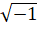

[164][1878年的计划]………………………………………………………457
[历史导论]…………………………………………………………………461—495
[57][历史]……………………………………………………………………461
[98][导言]……………………………………………………………………465
[札记和片断]…………………………………………………………………485
[87]必须研究自然科学各个部门的循序发展……………………………485
[95]黑格尔《哲学史》。——希腊哲学（古代人的自然观） …………487
[96]留基伯和德谟克利特…………………………………………………491
[157]萨摩斯的阿里斯塔克 ………………………………………………492
[89]古代世界末期（300年前后）和中世纪末期（1453年）的情况的差别 ……………492
[90]历史——发明…………………………………………………………494
[黑格尔以来的理论发展进程。哲学和自然科学] ……………………496—533
[163]《反杜林论》旧序。论辩证法 ………………………………………496
[162]神灵世界中的自然研究 ………………………………………………506
[札记和片断]…………………………………………………………………518
[1]毕希纳 …………………………………………………………………518
[9]关于毕希纳妄图从生存斗争出发来非难社会主义和经济学 ………522
[193]《费尔巴哈》的删略部分 …………………………………………523
[56]自然科学家相信，他们只要不理睬哲学或辱骂哲学，就能从哲学中解放出来 ………528
[97]自然科学家尽管可以采取他们所愿意采取的态度，他们还得受哲学的支配 …………528
[180]正如傅立叶是一首数学的诗…………………………………………529
[27]荒谬的多孔性理论 ……………………………………………………529
[152]黑格尔《全书》第1部第205—206页…………………………………529
[149]如果说黑格尔把自然界看做永恒的“观念”在外化中的显现 ………529
[190]霍夫曼（《霍亨索伦王朝庇护下的化学研究工作一百年》）引证自然哲学………530
[156]理论和经验……………………………………………………………530
[129]黑格尔靠纯粹的思想构建光和色的理论……………………………530
[122]如果读一下例如托·汤姆生关于电学的著作………………………531
[42]在奥肯那里 ……………………………………………………………531
[40]自然科学家的思维……………………………………………………531
[44]上帝在信仰上帝的自然科学家那里的遭遇…………………………532
[6]赛奇和教皇………………………………………………………………533
[185]仪仅用在某物上花费的劳动时间来计算该物的价值………………533
[辩证法作为科学] …………………………………………………………534—577
[165]辩证法……………………………………………………………………534
[札记和片断] …………………………………………………………………541
[规律和范畴] ………………………………………………………………541
[82]所谓的客观辩证法是在整个自然界中起支配作用的 ……………541
[81]僵硬和固定的界线是和进化论不相容的…………………………542
[103]★傅立叶（《经济的和协作的新世界》）…………………………369
[14]知性的思维规定的对立性：两极化 ………………………………543
[107]两极性………………………………………………………………543
[108]在海克尔那里，还有两极性的另一个例子………………………543
[106]两极化………………………………………………………………545
[17]“本质”的各个规定的真实本性 …………………………………545
[121]把正和负看做一样的东西…………………………………………545
[21]正和负 ………………………………………………………………546
[19]例如，部分和整体在有机自然界中已经是不够用的范畴了 ………546
[25]单一的和复合的 ……………………………………………………546
[179]同一和差异——必然性和偶然性——原因和结果………………547
[20]同一性——抽象的 …………………………………………………547
[24]同一性。补充 ………………………………………………………548
[55]旧形而上学意义上的同一律是旧世界观的基本定律 ……………548
[145]偶然性和必然性……………………………………………………549
[36]相互作用 ……………………………………………………………553
[33]因果性 ………………………………………………………………554
[150]单凭观察所得的经验，是决不能充分证明必然性的……………556
[15]对于否认因果性的人来说，任何自然规律都是假说 ……………556
[43]终极的原因和起作用的原因 ………………………………………557
[102]黑格尔《逻辑学》第1卷…………………………………………557
[认识] ………………………………………………………………………558
[46]自然界和精神的统一 ………………………………………………558
[76]如性和理性 …………………………………………………………558
[182]一个概念或概念关系………………………………………………559
[183]抽象的和具体的……………………………………………………559
[186]认识…………………………………………………………………559
[187]辩证逻辑和旧的纯粹的形式逻辑相反……………………………560
[189]但是，以上各点也证明了…………………………………………563
[188]个别性、特殊性、普遍性…………………………………………563
[104]海克尔的谬论：归纳反对演绎……………………………………564
[105]一百年前，用归纳法发现了海虾和蜘蛛都是昆虫………………564
[41]归纳和演绎 …………………………………………………………565
[77]关于归纳万能论者 …………………………………………………565
[86]归纳和分析 …………………………………………………………566
[12]只要自然科学运用思维，它的发展形式就是假说 ………………567
[16]自在之物 ……………………………………………………………568
[109]康德的自在之物的有价值的自我批判……………………………569
[100]永恒的自然规律也越来越变成历史的自然规律…………………569
[125]天文学中以地球为中心的观点是褊狭的…………………………570
[144]关于耐格里所说的没有能力认识无限……………………………571
[151]关于耐格里…………………………………………………………575
[23]恶无限性 ……………………………………………………………576
[111] 1.无限的进展过程在黑格尔那里是一个空旷的荒野…………576
[物质的运动形式以及各门科学的联系] ……………………………578—587
[2]自然科学的辩证法……………………………………………………578
[47]科学分类 ……………………………………………………………579
[48]在上世纪末叶，在多半坚持机械唯物主义的法国唯物主义者之后 ………579
[126]孔德不可能是他从圣西门那里抄袭来的关于自然科学的百科全书式的排序法的创造者 ………580
[132]黑格尔的（最初的）分类…………………………………………580
[159J注释…………………………………………………………………581
[161]关于“机械的”自然观……………………………………………582
[178]量转变为质…………………………………………………………587
[各门科学的辩证内容] ……………………………………………………588—758
[166][1880年的计划]…………………………………………………………588
[170]运动的基本形式…………………………………………………………589
[札记和片断] …………………………………………………………………607
[11]终极的原因——物质及其固有的运动 ……………………………607
[26]原始物质 ……………………………………………………………607
[153]通常都把重量看做物质性的最一般的规定………………………608
[123]吸引和重力…………………………………………………………608
[13]吸引转变成排斥和排斥转变成吸引 ………………………………609
[39]物质的可分性 ………………………………………………………609
[3]可分性 …………………………………………………………………610
[30] 它〈运动〉的本质应该是空间和时间的直接统一 …………………610
[60]力………………………………………………………………………610
[61]海克尔《人类起源学》第707页……………………………………610
[38]机械运动………………………………………………………………611
[32]运动和平衡……………………………………………………………611
[169]（1）天体的运动……………………………………………………612
[29]运动不灭已经表现在笛卡儿的下述命题中…………………………613
[115]能量守恒 ……………………………………………………………613
[37]运动不灭………………………………………………………………613
[138]力和力的守恒 ………………………………………………………614
[28]力………………………………………………………………………614
[31]力（见上述）…………………………………………………………616
[181]如果说，黑格尔把力和力的表现原因和结果理解为同一的东西 ………617
[35]力。还得分析消极的方面……………………………………………617
[171]运动的量度——功……………………………………………………………618
[札记和片断] ………………………………………………………………………633
[176]气体动力学证明mw2也适用于气体分子……………………………633
[172]10千克的物体被提升80米…………………………………………633
[173]质量为4的物体………………………………………………………635
[174]1）v＝ct………………………………………………………………637
[数学]…………………………………………………………………………………638
[160]关于现实世界中数学上的无限之原型………………………………638
[18]数学上的所谓公理 ……………………………………………………644
[66]同一和差异 ……………………………………………………………644
[67]数学问题………………………645
[120]只有微分学才使自然科学能够用数学来表示过程即运动 ……………646
[137]分子和微分……………………………………………………………646
[112]量和质…………………………………………………………………646
[113]数………………………………………………………………………647
[116]零………………………………………………………………………647
[117]一………………………………………………………………………649
[69]零次幂 …………………………………………………………………650
[118]

[1l4]数学……………………………………………………………………651
[68]渐近线 …………………………………………………………………652
[70]直线和曲线 ……………………………………………………………652
[139]三角学…………………………………………………………………653
[119]数学的应用……………………………………………………………653
[142]球………………………………………………………………………654
[143]F（x+h，y+k） ……………………………………………………655
[力学和天文学]………………………………………………………………………657
[63]辩证思维的必要性的例子 ……………………………………………657
[7]牛顿的引力和离心力……………………………………………………657
[34]牛顿的万有引力 ………………………………………………………657
[74]牛顿的力的平行四边形 ………………………………………………658
[8]拉普拉斯的理论…………………………………………………………658
[91]梅特勒，恒星 …………………………………………………………658
[92]星云 ……………………………………………………………………660
[93]赛奇：天狼星 …………………………………………………………662
[177]潮汐摩擦。康德和汤姆生—泰特……………………………………662
[155]笛卡儿发现，落潮和涨潮都是由月球的作用所引起的……………667
[62]迈尔《热力学》第328页 ……………………………………………667
[140]动力学中动能本身的消耗总是两重性的……………………………668
[154]碰撞和摩擦……………………………………………………………668
[10]摩擦和碰撞使有关的物体产生内在的运动 …………………………668
[物理学]………………………………………………………………………………669
[191]热……………………………………………………………………………669
[192]电……………………………………………………………………………674
[札记和片断] ……………………………………………………………………728
[124]最初的、素朴的观点…………………………………………………728
[73]进入宇宙空间的热辐射 ………………………………………………728
[79]克劳修斯 ………………………………………………………………729
[88]克劳修斯的第二定律 …………………………………………………729
[167]对汤姆生、克劳修斯、洛施密特来说，结论是……………………730
[5]聚集状态…………………………………………………………………730
[4]内聚力……………………………………………………………………730
[141]在气体的运动中………………………………………………………730
[175] ……………………………………………………………………730
[78]动力学必须证明 ………………………………………………………731
[54]气体动力学 ……………………………………………………………731
[58]理论发展中的对立性 …………………………………………………731
[71]以太 ……………………………………………………………………732
[84]光和暗 …………………………………………………………………732
[130]库仑说…………………………………………………………………733
[131]电。关于汤姆生的无稽之谈…………………………………………735
[135]静电和动电……………………………………………………………736
[158]自然辩证法的一个很好的例子………………………………………737
[133]电化学…………………………………………………………………737
[168] Cu—CuSO4……………………………………………………………737
[化学]…………………………………………………………………………………738
[80]关于实在的、化学上统一的物质的观念…………………………… 738
[128]化学上的新时代是从原子论开始的…………………………………738
[148]量到质的转化…………………………………………………………739
[134]旧的、方便的、符合以往流行的实践的方法………………………739
[184]名称的意义……………………………………………………………739
[生物学]………………………………………………………………………………740
[127]地文学…………………………………………………………………740
[65]反应 ……………………………………………………………………740
[22]生和死 …………………………………………………………………740
[59]自然发生 ………………………………………………………………741
[64]莫里茨，瓦格钠《自然科学的争论问题第1卷 ……………………742
[49]原生生物 ………………………………………………………………748
[75]深水虫 …………………………………………………………………751
[94]《自然》第294期及以下各期 ………………………………………751
[50]个体 ……………………………………………………………………751
[53]整个有机界在不断地证明形式和内容的同一性或
不可分离性 ……………………………………………………………751
[51]形态学上的各种形态在一切发展阶段上的重现 ……………………751
[52]在有机体发展的全部历史中 …………………………………………752
[72]脊椎动物 ………………………………………………………………752
[110]当黑格尔以交配（繁殖）为中介而从生命过渡到认识的时候…………752
[147]黑格尔叫做相互作用的东西是有机体………………………………753
[45]自然界中的萌芽 ………………………………………………………753
[146]必须指出，达尔文学说是……………………………………………753
[136]生存斗争………………………………………………………………754
[83]生存斗争 ………………………………………………………………755
[85]功 ………………………………………………………………………756
[自然界和社会] ………………………………………………………………759—772
[99]劳动在从猿到人的转变中的作用 …………………………………………759
[札记和片断]
[101]★奴隶制…………………………………………………………………365
[四束手稿目录]……………………………………………………………773—774
[第一束] …………………………………………………………………………773
[194]辩证法和自然科学………………………………………………………773
[第二束] …………………………………………………………………………773
[195]自然研究和辩证法………………………………………………………773
[第三束] …………………………………………………………………………774
[196]自然辩证法………………………………………………………………774
[第四束] …………………………………………………………………………774
[197]数学和自然科学。各种札记……………………………………………774
脚 注
(421) 各篇手稿标题前方括号[]内的数字是编者按照恩格斯手稿写作时间加的序号，后面标注的数字是本卷的页码。标有★符号的两个片断收入恩格斯的《反杜林论》准备材料。——编者注